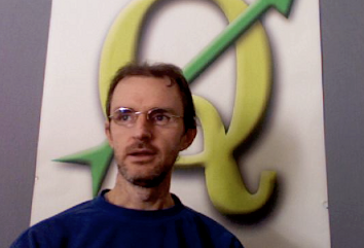

重要
翻訳は あなたが参加できる コミュニティの取り組みです。このページは現在 42.86% 翻訳されています。
12. 著者とコントリビュータについて
 |
Tim Sutton --- Editor & Lead Author. Tim is a developer and project steering committee member of the QGIS project. He is passionate about seeing GIS being Freely available to everyone. Tim is also a founding member of Linfiniti Consulting CC. --- a small business set up with the goal of helping people to learn and use opensource GIS software. Web: https://kartoza.com Email: tim@kartoza.com |
Otto Dassau --- Assistant Author. Otto Dassau is the documentation maintainer and project steering committee member of the QGIS project. Otto has considerable experience in using and trainin people to use Free and Open Source GIS software. Web: http://www.nature-consult.de Email: otto.dassau@gmx.de |
|
Marcelle Sutton --- プロジェクト・マネージャ。Marcelle Sutton は英語とドラマを研究し、教員資格を持っています。Marcelleはまた、 Linfiniti Consulting CC（人々がオープンソースのGISソフトウェアを学び使用するのを支援することを目標とした中小企業）の創立メンバーです。 Web: https://kartoza.com Email: marcelle@kartoza.com |
|
Lerato Nsibande --- Video Presenter. Lerato is a grade 12 scholar living in Pretoria. Lerato learns Geography at school and has enjoyed learning GIS with us! |
|
Sibongile Mthombeni --- Video Presenter. Sibongile lives near Johannesburg with her young daughter. Her goal is to continue her studies and become a nurse. Working on this project was the first time Sibongile used a computer. |